Next: Correlation coefficient Up: Tensor operations Previous: Histogram
Computes the covariance of two tensors along named dimension. If the
inputs are of rank  and 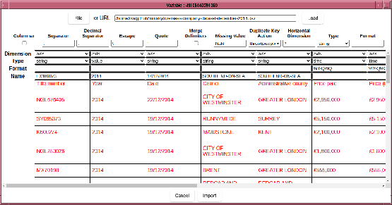 respectively, the output will be a
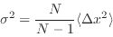 rank tensor, where the 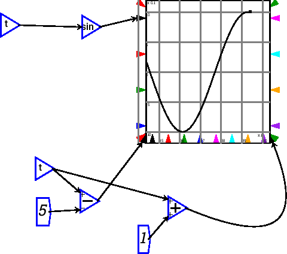 element is the
covariance of the 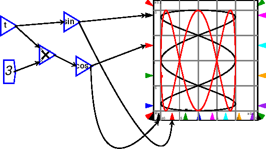-th slice of the first argument along the named
dimension, and the 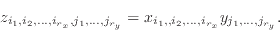-th slice along the named dimension. As such, it
is conformant with the definition of cov function in Octave, but
not with the equivalently named function in Matlab:
and 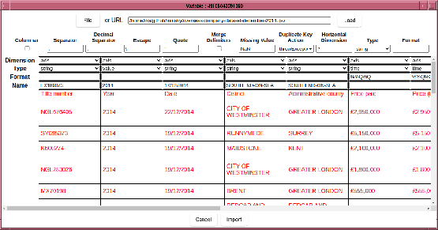 respectively, the output will be a
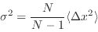 rank tensor, where the 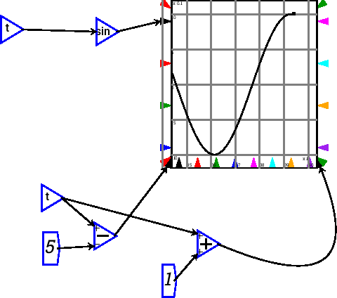 element is the
covariance of the 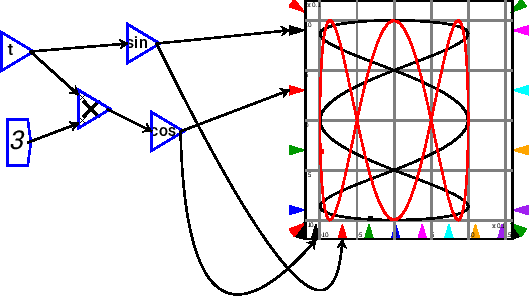-th slice of the first argument along the named
dimension, and the 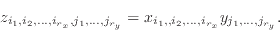-th slice along the named dimension. As such, it
is conformant with the definition of cov function in Octave, but
not with the equivalently named function in Matlab:
Compatibility Note:: Octave always treats rows of X and Y as multivariate random variables. For two inputs, however, MATLAB treats X and Y as two univariate distributions regardless of their shapes, and will calculate ‘cov ([X(:), Y(:)])’ whenever the number of elements in X and Y are equal. This will result in a 2x2 matrix. Code relying on MATLAB’s definition will need to be changed when running in Octave.
If only a single argument  is supplied to the covariance, then the
result is equivalent to cov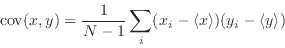, ie each slice is covaried with
each other slice.
is supplied to the covariance, then the
result is equivalent to cov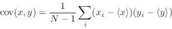, ie each slice is covaried with
each other slice.
The formula for covariance between stochastic variables  and
and  is
is